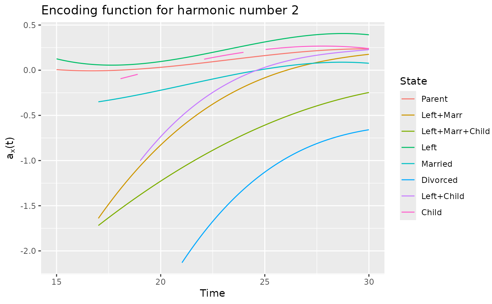

Family life states from the Swiss Household Panel biographical survey
Source:R/datasets.R
biofam2.Rd2000 16 year-long family life sequences built from the retrospective biographical survey carried out by the Swiss Household Panel (SHP) in 2002. Data from TraMineR package.
data(biofam2)
Format
A data.frame containing three columns:
id id of individuals (2000 different ids)
time age in years where a change occurs
state new state.
Source
Swiss Household Panel https://forscenter.ch/projects/swiss-household-panel/
Details
The biofam2 dataset derives from the biofam dataset from TraMineR package. The biofam2 format is adapted to cfda functions.
The biofam data set was constructed by Müller et al. (2007) from the data of the retrospective biographical survey carried out by the Swiss Household Panel (SHP) in 2002.
The data set contains sequences of family life states from age 15 to 30 (sequence length is 16).
The sequences are a sample of 2000 sequences of those created from the SHP biographical survey.
It includes only individuals who were at least 30 years old at the time of the survey.
The biofam data set describes family life courses of 2000 individuals born between 1909 and 1972.
The eight states are defined from the combination of five basic states, namely Living with parents (Parent), Left home (Left), Married (Marr), Having Children (Child), Divorced: "Parent", "Left", "Married", "Left+Marr", "Child", "Left+Child", "Left+Marr+Child", "Divorced"
References
Müller, N. S., M. Studer, G. Ritschard (2007). Classification de parcours de vie à l'aide de l'optimal matching. In XIVe Rencontre de la Société francophone de classification (SFC 2007), Paris, 5 - 7 septembre 2007, pp. 157–160.
Examples
data(biofam2) head(biofam2) #> id time state #> 1 1 15 Parent #> 2 1 24 Left+Marr #> 3 1 25 Left+Marr+Child #> 4 1 30 Left+Marr+Child #> 5 2 15 Parent #> 6 2 16 Left # \donttest{ # It is recommended to increase the number of cores to reduce computation time set.seed(42) basis <- create.bspline.basis(c(15, 30), nbasis = 4, norder = 4) fmca <- compute_optimal_encoding(biofam2, basis, nCores = 2) #> ######### Compute encoding ######### #> Number of individuals: 2000 #> Number of states: 8 #> Basis type: bspline #> Number of basis functions: 4 #> Number of cores: 1 #> ---- Compute V matrix: #> #> DONE in 28.64s #> ---- Compute U matrix: #> #> DONE in 136.32s #> ---- Compute encoding: #> DONE in 0.29s #> ---- Compute Bootstrap Encoding: #> ******** #> Warning: The F matrix contains at least one column of 0s. At least one state is not present in the support of one basis function. Corresponding coefficients in the alpha output will have a 0 value. #> **************************************** #> Warning: The F matrix contains at least one column of 0s. At least one state is not present in the support of one basis function. Corresponding coefficients in the alpha output will have a 0 value. #> ** #> DONE in 1.1s #> Run Time: 167.46s plot(fmca, harm = 1) #> Warning: Removed 162 row(s) containing missing values (geom_path).plot(fmca, harm = 2) #> Warning: Removed 162 row(s) containing missing values (geom_path).
plotEigenvalues(fmca, cumulative = TRUE, normalize = TRUE)  plotComponent(fmca, comp = c(1, 2), addNames = FALSE) # }